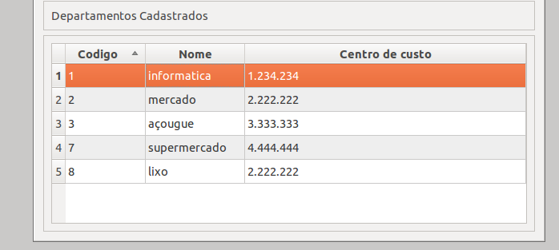
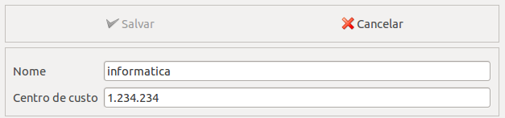
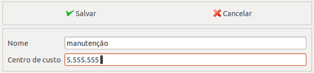
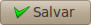
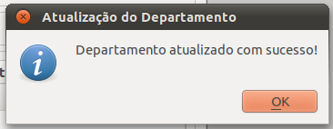
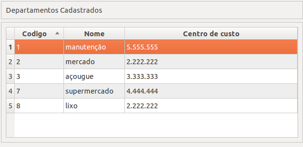
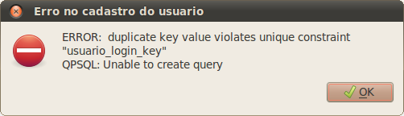

Cadastro de Departamento¶
Nesta tela o usuario pode cadastrar os departamento da empresa, além de fazer a manutenção dos outros departamentos. Manutenção significa que o usuario vai conseguir fazer as seguintes operações:
- Cadastrar um novo departamento;
- Alterar dados dos departamento já cadastrados;
Cadastrando um novo departamento¶
Para cadastrar um novo departameto, você digita os dados do departamento e clica no botão salvar, se quiser cancelar a operação clique em no botão cancelar,
Atualizando os dados do departamento¶
Para atualizar os dados dos departamentos cadastrados, você deve clicar no departameto que deseja alterar os dados,
os campos irão ser preenchidos automaticamente, com os dados do departamento que você clicou,
agora altere os dados do departamento,
depois clique no botão salvar,
se a operação foi bem sucedida, você verá uma mensagem como esta,
aparecerá na linha que estava o departamento, seus novos dados.
Mensagens de erro¶
Estas são a mensagens de erro que o sistema pode lhe retornar,

Você pode ter esquecido de preencher todos os campos.
Esta ultima mensagem de erro ocorre quando, o nome do departamento ja existe.